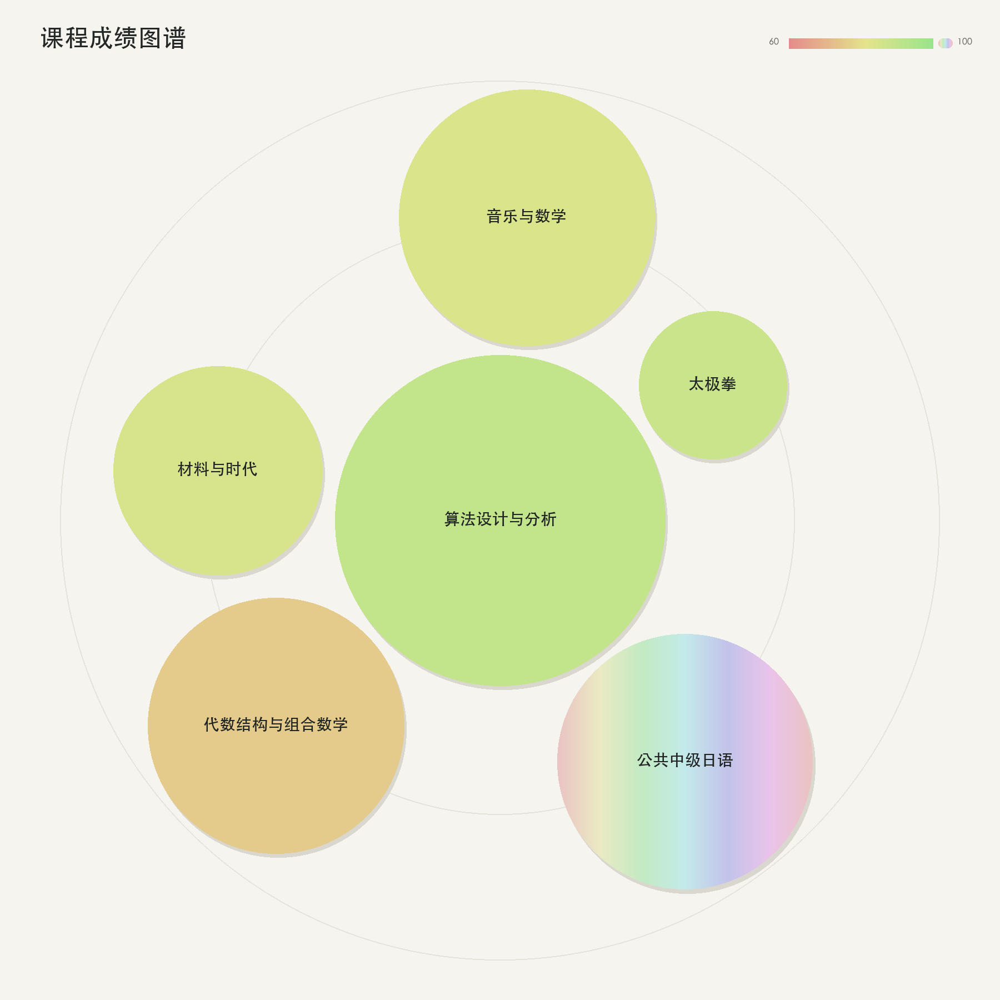

2026-07-12
PKUCourseOrbit：把课程成绩画成一张轨道图
成绩单很擅长回答“这门课得了多少分”，却不太容易让人一眼看出几年课程共同构成的形状。PKUCourseOrbit 是一个小型的本地可视化工具：它从北大树洞成绩页面保存的 HTML 中提取课程信息，再把课程、学分、类型和成绩组织成一张课程成绩图谱。
一张图如何编码一门课
图中的每个圆都代表一门课程，视觉属性分别对应不同信息：
- 面积对应学分：学分越高，圆的面积越大，因此半径按照学分的平方根计算。
- 位置对应课程类型：专业必修优先靠近中心，专业限选次之，其他课程位于更外侧；同类课程中学分更高的课程优先放置。
- 颜色对应成绩：60–99 分从红色逐渐过渡到绿色，100 分使用彩虹渐变。
- 特殊成绩单独处理：“合格/通过”使用 99 分对应的绿色，退课 W、缓考等状态不进入图谱。
从网页到图谱
解析部分使用 lxml 读取保存后的成绩页面，根据学期块和课程行提取学期、课程名、学分、成绩、课程体系与课程号，并将其整理为结构化的 Course 数据。除了输出图片，也可以同时导出 JSON，方便继续做统计或二次可视化。
布局没有依赖额外的图布局库。程序先按照“课程类型优先级、学分、课程名”排序，再沿黄金角方向搜索不会与现有圆相交的位置。圆之间保留固定间距，最后将整体缩放进同心圆构成的画布中。这样既能让高优先级课程靠近中心，也能保持结果稳定、可重复生成。
使用方式
首先在北大树洞成绩查询页面右键选择“另存为”，将保存的 HTML 放到项目目录。安装依赖后运行：
python3 -m pip install -r requirements.txt
python3 analyze_scores.py 北大树洞.html \
-o score-analysis.png \
--json courses.json如果只想查看一个学期，可以额外指定学期名称：
python3 analyze_scores.py 北大树洞.html \
--semester '24-25学年度2学期' \
-o semester.png隐私与适用范围
成绩页面包含个人信息，因此整个解析和绘图过程都在本地完成，不需要上传 HTML。项目当前依赖北大树洞成绩页的 DOM 结构；如果页面类名或层级发生变化，需要同步更新字段映射。它更像是一张个人课程经历的视觉快照，而不是对成绩进行严肃统计分析的工具。